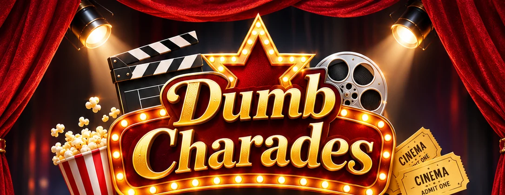

MOVIES
Language
Release period
Movie selection
Skips per turn
⏱ Timer & scoring · Optional
Use timer
Round duration
History & settings
Offline ready. Movies never repeat unless you reset history.
Movie catalogue · 24K goal24,000 / 24,000
Locked master catalogue · 100% complete
English 15,000 · Hindi 9,000
English 15,000 · Hindi 9,000
1:30
Pick a film to act out.
HINDI FILM
Ready?
MAIN CAST
DIRECTOR
Another turn?
Guessed: 0 · Skipped: 0 · Rounds: 0
Act without speaking. Your team guesses.
Results
Films guessed